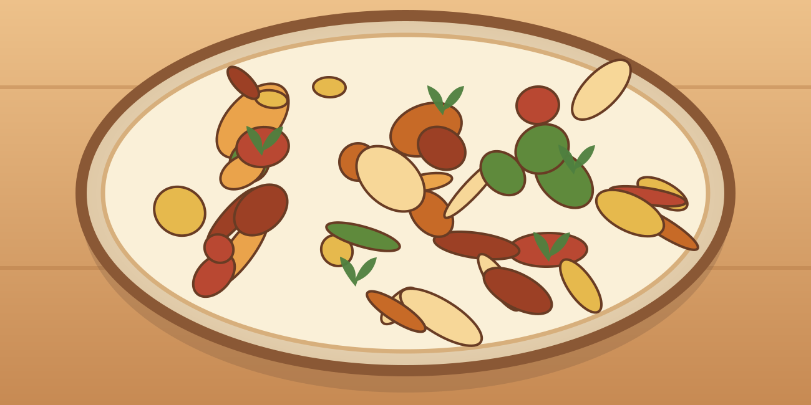

Poulet moutarde et crème
Une grosse portion maison, simple à préparer, avec des légumes et des protéines.
⏱ 25 min🍽 1 grosse portion💰 ≈ 3–5 €💪 ≈ 56 g protéines≈ 760 kcal
Ingrédients
- 200 g de poulet
- 90 g de riz cru
- 180 g de haricots verts
- 50 ml de crème légère
- 15 g de moutarde
- 50 g d’oignon
- 5 ml d’huile
- Poivre
Préparation
- Cuire riz et haricots verts dans deux casseroles ou successivement.
- Couper le poulet en aiguillettes, émincer l’oignon.
- Faire revenir oignon et poulet avec l’huile 8 à 10 min, jusqu’à cuisson complète.
- Ajouter moutarde et crème avec un peu d’eau ; laisser frémir 2 à 3 min.
- Servir avec riz et haricots.
Conservation et réchauffage
À conserver 2 jours au frais ; réchauffer doucement jusqu’à bien chaud.
Nutrition et prix indicatifs : à recalculer selon les marques et quantités dans MyFitnessPal. Les sauces mentionnées sont sans poisson : vérifier les étiquettes.